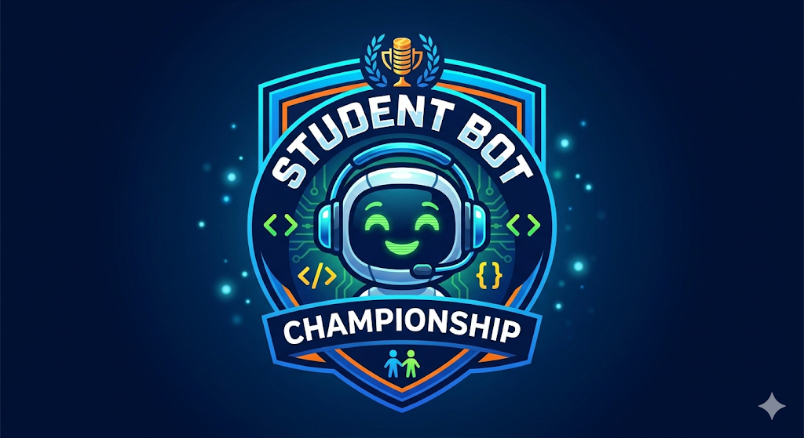

Create Your Smart Bot JavaScript function to Win in the distributed Nim-like Game tournament!

For Your Bot-Gamer You must implement a Smart javascript function play() with no more than 4096 bytes of code that will allow Your Bot make optimal and quick moves in the game.
Your function play() will be called by the Game Engine on every turn with the current State of the Game and the Forbidden moves as input.
Your function play() must return { the pile Index and the Number of coins } to remove at current Move.
After checking the correctness of Your move, the Game Engine will update the State of the Game and call Your Opponent play() for the next turn.
And so on until the end of the Game when one of the Players wins and another loses.
Example of not very smart Bot function play() :
function play(piles, forbidden, context) {
// TO DO
const target = piles.findIndex(p => p > 0); // find the first non-empty pile
let NumberOfCoins;
if(piles[target]==1) NumberOfCoins=1;
else NumberOfCoins=2;
if (forbidden.includes(NumberOfCoins)) NumberOfCoins=1; // if for example 2 is forbidden we take 1 coin
return { pileIndex: target, count: NumberOfCoins };
}
//function play() INPUT: (piles, forbidden, context)
// piles: array of integers (coins) representing the current state of the game
// forbidden: array of forbidden moves
// context: { mode: CONFIG.mode, timeRemaining: player.timeBank }
// CONFIG.mode can be "NORMAL" or "GIVEAWAY" (see rules for details)
//function play() OUTPUT: Return an object { pileIndex: target, count: NumberOfCoins };
//For example { pileIndex: 0, count: 1 } represents Bot's want to take 1 coin from pile with Index 0